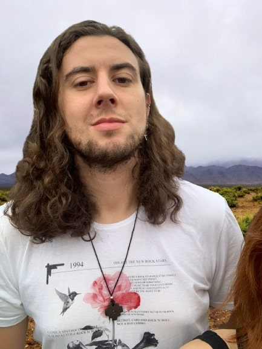

Roiney Beal

Roiney beal, brasileiro nascido em Serrafina Corrêa - RS e hoje recidindo em São Paulo - SP. Possui bacharelado em Química pela universidade de Passo Fundo, Mestrado pela Universidade Federal do Rio Grande do Sul
e é doutorando pela mesma universidade, sendo aluno especial do programa de pós-graduação em Química da Universidade de São Paulo. Atualmente aluno da Trybe em desenvolvimento Web full stack.
Habilidades
Hard Skills
- Conhecimentos e experiência em HPLC
- Conhecimento e experiência em Cálculos Quânticos com metodologia DFT
- Conhecimento e experiência em Cálculos Quânticos com metodologias Multiconfiguracionais (CASSCF, ADC(2))
- Conhecimento e experiência em Cálculos Quânticos com Métodos perturbativos (MP2, CASPT2)
Soft Skills
- Capacidade de comunicação desenvolvida a partir da colaboração com grupos de pesquisa internacionais
- Vasto conhecimento em pesquisa e resolução de problemas